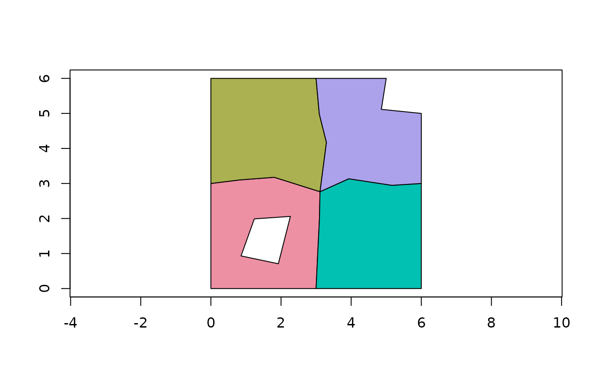
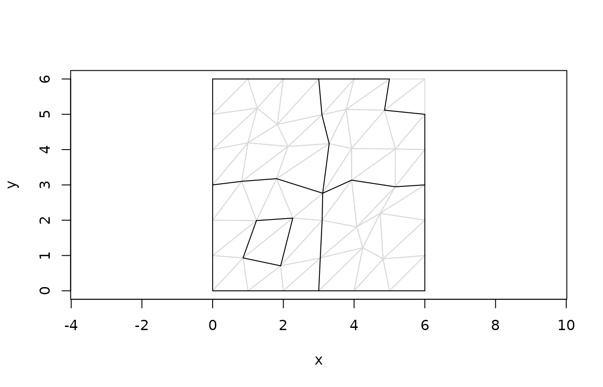
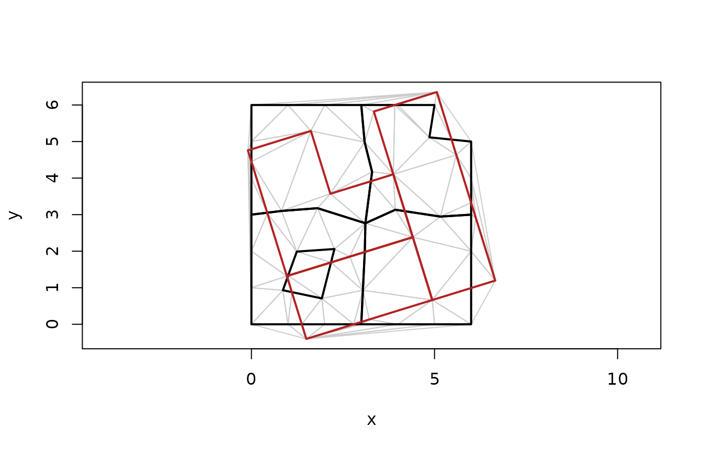

Many of the questions asked of polygons, the ST_*
functions of SQL databases and GEOS, can be answered from a
triangulation of them without forming the polygons at all. Area and
centroid are sums over triangles. Two regions touch when they share a
vertex or an edge but no triangle, and that is a question about integer
ids, not coordinates. A point is in a region when it is in one of its
triangles.
The tri_*() functions answer these questions on a
wkpool_tri, a triangle pool whose triangles share vertex
ids. For two separate layers (two meshes, or a mesh and some lines or
points), tri_overlay() first puts them into one mesh, and
then the relation between any two features is read in the same way. They
are new in wkpool 0.5.0, and like the triangle pool itself are
experimental.
A small coverage
A grid of unit squares, two triangles each, with the inner vertices moved so that nothing lines up. Any constrained triangulation of a coverage gives a mesh like this (see the Triangulation vignette); here it is built by hand so that nothing else is needed.
n <- 6L
g <- expand.grid(i = 0:n, j = 0:n)
v <- data.frame(.vx = seq_len(nrow(g)), x = as.double(g$i), y = as.double(g$j))
set.seed(1)
inner <- v$x > 0 & v$x < n & v$y > 0 & v$y < n
v$x[inner] <- v$x[inner] + runif(sum(inner), -0.3, 0.3)
v$y[inner] <- v$y[inner] + runif(sum(inner), -0.3, 0.3)
id <- function(i, j) j * (n + 1L) + i + 1L
cell <- expand.grid(i = seq_len(n) - 1L, j = seq_len(n) - 1L)
a <- id(cell$i, cell$j)
b <- id(cell$i + 1L, cell$j)
c <- id(cell$i + 1L, cell$j + 1L)
d <- id(cell$i, cell$j + 1L)
tri <- new_wkpool_tri(v, vx0 = c(a, a), vx1 = c(b, c), vx2 = c(c, d))
tri
#> <wkpool_tri[72 triangles, 49 vertices]>
#> [1] <triangle: 1,2,9> <triangle: 2,3,10> <triangle: 3,4,11>
#> [4] <triangle: 4,5,12> <triangle: 5,6,13> <triangle: 6,7,14>
#> [7] <triangle: 8,9,16> <triangle: 9,10,17> <triangle: 10,11,18>
#> [10] <triangle: 11,12,19> <triangle: 12,13,20> <triangle: 13,14,21>
#> [13] <triangle: 15,16,23> <triangle: 16,17,24> <triangle: 17,18,25>
#> [16] <triangle: 18,19,26> <triangle: 19,20,27> <triangle: 20,21,28>
#> [19] <triangle: 22,23,30> <triangle: 23,24,31> <triangle: 24,25,32>
#> [22] <triangle: 25,26,33> <triangle: 26,27,34> <triangle: 27,28,35>
#> [25] <triangle: 29,30,37> <triangle: 30,31,38> <triangle: 31,32,39>
#> [28] <triangle: 32,33,40> <triangle: 33,34,41> <triangle: 34,35,42>
#> [31] <triangle: 36,37,44> <triangle: 37,38,45> <triangle: 38,39,46>
#> [34] <triangle: 39,40,47> <triangle: 40,41,48> <triangle: 41,42,49>
#> [37] <triangle: 1,9,8> <triangle: 2,10,9> <triangle: 3,11,10>
#> [40] <triangle: 4,12,11> <triangle: 5,13,12> <triangle: 6,14,13>
#> [43] <triangle: 8,16,15> <triangle: 9,17,16> <triangle: 10,18,17>
#> [46] <triangle: 11,19,18> <triangle: 12,20,19> <triangle: 13,21,20>
#> [49] <triangle: 15,23,22> <triangle: 16,24,23> <triangle: 17,25,24>
#> [52] <triangle: 18,26,25> <triangle: 19,27,26> <triangle: 20,28,27>
#> [55] <triangle: 22,30,29> <triangle: 23,31,30> <triangle: 24,32,31>
#> [58] <triangle: 25,33,32> <triangle: 26,34,33> <triangle: 27,35,34>
#> [61] <triangle: 29,37,36> <triangle: 30,38,37> <triangle: 31,39,38>
#> [64] <triangle: 32,40,39> <triangle: 33,41,40> <triangle: 34,42,41>
#> [67] <triangle: 36,44,43> <triangle: 37,45,44> <triangle: 38,46,45>
#> [70] <triangle: 39,47,46> <triangle: 40,48,47> <triangle: 41,49,48>Groups of triangles stand for polygons. Here four regions are made of cells, with a hole in region 1 and a few cells left out.
region <- ifelse(cell$i < 3, ifelse(cell$j < 3, 1L, 2L), ifelse(cell$j < 3, 3L, 4L))
region[cell$i == 1 & cell$j == 1] <- NA # a hole in region 1
region[cell$i == 5 & cell$j == 5] <- NA # a notch out of region 4
group <- c(region, region) # one value per triangle
plot(tri_dissolve(tri, group), col = hcl.colors(4, "Set 2"), asp = 1)
tri_dissolve() is ST_Union() by group,
walking the boundary edges of each group into rings. The other functions
need no rings at all.
Measures
tri_measures() gives area, perimeter, centroid, a point
inside and the extent of each group, as ST_Area(),
ST_Perimeter(), ST_Centroid(),
ST_PointOnSurface() and ST_Envelope()
would.
tri_measures(tri, group)
#> group area perimeter centroid_x centroid_y point_x point_y xmin
#> 1 1 8.053748 16.58768 1.505247 1.554608 0.6875395 2.363443 0
#> 2 2 9.323901 12.46095 1.596213 4.500517 2.7377638 3.370357 0
#> 3 3 8.784550 11.75047 4.535572 1.488166 5.1860270 1.700211 3
#> 4 4 7.538196 12.30035 4.452618 4.383853 4.6516069 4.388431 3
#> ymin xmax ymax
#> 1 0.000000 3.112214 3.176544
#> 2 2.764766 3.295144 6.000000
#> 3 0.000000 6.000000 3.134227
#> 4 2.764766 6.000000 6.000000Relations
tri_relate() gives the DE-9IM matrix, as
ST_Relate() does, for every pair of groups that share a
vertex. Pairs it does not list are disjoint.
r <- tri_relate(tri, group)
r
#> a b relate
#> 1 1 2 FF2F11212
#> 2 1 3 FF2F11212
#> 3 1 4 FF2F01212
#> 4 2 3 FF2F01212
#> 5 2 4 FF2F11212
#> 6 3 4 FF2F11212Each named predicate is a pattern on that string. Two groups touch
when their interiors do not meet (first character F) but
they meet at all, which in a coverage is every pair listed. Regions 1
and 4 (and 2 and 3) meet only at the centre vertex, so the entry for
boundary meeting boundary (the fifth character) is 0, a
point, where the pairs that share a line have 1:
touches <- substr(r$relate, 1, 1) == "F"
r[touches & substr(r$relate, 5, 5) == "0", c("a", "b")]
#> a b
#> 3 1 4
#> 4 2 3Groups may overlap: give group as a table of triangle
and group instead. Here a fifth group covers the middle of the grid.
centre <- which(cell$i %in% 2:3 & cell$j %in% 2:3)
gt <- data.frame(
triangle = c(seq_along(tri), centre, centre + nrow(cell)),
group = c(group, rep(5L, 2 * length(centre)))
)
gt <- gt[!is.na(gt$group), ]
r5 <- tri_relate(tri, gt)
r5[r5$b == 5, ]
#> a b relate
#> 4 1 5 212101212
#> 7 2 5 212101212
#> 9 3 5 212101212
#> 10 4 5 212101212The interiors of region 5 and each region meet in two dimensions
(first character 2): they overlap.
Points
tri_locate() finds the triangle that holds each point,
so the group of a point is one lookup away. A point on an edge or vertex
goes to the lowest triangle that holds it, decided by exact
arithmetic.
set.seed(2)
pts <- wk::xy(runif(10, -0.5, 6.5), runif(10, -0.5, 6.5))
i <- tri_locate(tri, pts)
data.frame(x = round(wk::wk_coords(pts)$x, 2), y = round(wk::wk_coords(pts)$y, 2),
triangle = i, region = group[i])
#> x y triangle region
#> 1 0.79 3.37 19 2
#> 2 4.42 1.17 11 3
#> 3 3.51 4.82 64 4
#> 4 0.68 0.77 37 1
#> 5 6.11 2.34 NA NA
#> 6 6.10 5.47 NA NA
#> 7 0.40 6.33 NA NA
#> 8 5.33 1.08 12 3
#> 9 2.78 2.61 51 1
#> 10 3.35 0.02 4 3Parts and holes
tri_structure() counts the parts, holes and rings of
each group, as ST_NumGeometries() and
ST_NumInteriorRings() would for the dissolved polygons.
Region 1 has its hole, and region 4 is one part with a notch.
tri_structure(tri, group)
#> group n_parts n_holes n_rings
#> 1 1 1 1 2
#> 2 2 1 0 1
#> 3 3 1 0 1
#> 4 4 1 0 1Boundaries, clipping and hulls
tri_boundary() gives each group’s boundary as segments
on the same vertex pool, directed with the group on the left. With
once = TRUE an edge between two groups is kept once, so
each line is drawn once.
bnd <- tri_boundary(tri, group, once = TRUE)
plot(tri, col = NA, border = "grey85", asp = 1)
plot(bnd, col = "black", add = TRUE)
tri_clip_rect() clips the triangles by a rectangle and
returns a mesh again, so all of the above still applies to the result.
tri_convex_hull() gives the hull of each group as a
polygon.
clipped <- tri_clip_rect(tri, c(1.5, 1.5, 4.5, 4.5))
clipped_group <- group[attr(clipped, "source")]
tri_measures(clipped, clipped_group)[, c("group", "area", "perimeter")]
#> group area perimeter
#> 1 1 2.041228 6.381437
#> 2 2 2.581524 6.493280
#> 3 3 2.112054 5.715015
#> 4 4 1.895960 5.971036
wk::as_wkt(tri_convex_hull(tri, group))[1]
#> <wk_wkt[1]>
#> [1] POLYGON ((0 0, 3 0, 3.096479 1.996125, 3.112214 2.764766, 1.805934 3.176544, 0.8235847 3.10108...Preparing a mesh for many questions
Each function above derives what it needs from the pool: the
triangles as rows of the vertex table, the edge table
(tri_neighbours()), the membership of triangles in groups
and, for tri_dissolve() and tri_structure(),
the boundary rings. tri_prepare() computes these once and
keeps them with the pool, the mesh counterpart of a prepared geometry in
GEOS. Later calls with the same group read the cache;
another group, or a changed pool, is computed as usual, and
subsetting drops the cache.
ptri <- tri_prepare(tri, group)
tri_is_prepared(ptri)
#> [1] TRUE
identical(tri_structure(ptri, group), tri_structure(tri, group))
#> [1] TRUERelations between layers
tri_relate() compares groups of one mesh. To compare
features of two layers that were not triangulated together,
tri_overlay() puts both into one constrained triangulation
(with the cdtr package), in which every place they meet is a shared
vertex or edge. A layer can be a triangle mesh (polygons, as groups of
triangles), lines, or points. Here the second layer is a coarser grid,
turned and moved so that its edges cross the first.
m <- 3L
gb <- expand.grid(i = 0:m, j = 0:m)
th <- 0.3
vb <- data.frame(.vx = seq_len(nrow(gb)),
x = 1.8 * (gb$i * cos(th) - gb$j * sin(th)) + 1.5,
y = 1.8 * (gb$i * sin(th) + gb$j * cos(th)) - 0.4)
idb <- function(i, j) j * (m + 1L) + i + 1L
cb <- expand.grid(i = seq_len(m) - 1L, j = seq_len(m) - 1L)
tri_b <- new_wkpool_tri(
vb,
vx0 = c(idb(cb$i, cb$j), idb(cb$i, cb$j)),
vx1 = c(idb(cb$i + 1L, cb$j), idb(cb$i + 1L, cb$j + 1L)),
vx2 = c(idb(cb$i + 1L, cb$j + 1L), idb(cb$i, cb$j + 1L))
)
group_b <- rep(c(1L, 1L, 2L, 3L, 3L, 2L, 3L, NA, 2L), 2)
ov <- tri_overlay(tri, tri_b, group, group_b)
ov
#> <wkpool_overlay> 130 triangles, 70 vertices
#> layer x: 4 polygon features
#> layer y: 3 polygon features
plot(ov$mesh, col = NA, border = "grey80", asp = 1)
plot(tri_dissolve(tri, group), col = NA, border = "black", lwd = 2, add = TRUE)
plot(tri_dissolve(tri_b, group_b), col = NA, border = "firebrick", lwd = 2, add = TRUE)
tri_overlay_relate() then gives the DE-9IM matrix for
every pair of a feature of x and a feature of
y that are not disjoint.
tri_overlay_relate(ov)
#> x y relate
#> 1 1 1 212101212
#> 2 1 3 212101212
#> 3 2 3 212101212
#> 4 3 1 212101212
#> 5 3 2 212101212
#> 6 3 3 212101212
#> 7 4 2 212101212
#> 8 4 3 212101212The same works for lines and points, against a mesh or against each other. A line’s interior is its edges and the vertices inside it, and its boundary is its two ends (where an odd number of its edges end, the rule GEOS uses).
lines <- wk::wkt(c("LINESTRING (-1 1.5, 7 1.5)", "LINESTRING (1 1, 2 2, 1 2, 1 1)",
"LINESTRING (3 0, 3 6)"))
ovl <- tri_overlay(tri, lines, group)
head(tri_overlay_relate(ovl))
#> x y relate
#> 1 1 1 1F20F1102
#> 2 1 2 1F20F11F2
#> 3 1 3 1F2001102
#> 4 2 3 1F2001102
#> 5 3 1 1F20F1102
#> 6 3 3 FF2F01102
ovp <- tri_overlay(lines, wk::xy(c(1, 3, 5), c(1.5, 3, 1.5)))
tri_overlay_relate(ovp)
#> x y relate
#> 1 1 1 0F1FF0FF2
#> 2 1 3 0F1FF0FF2
#> 3 2 1 0F1FFFFF2
#> 4 3 2 0F1FF0FF2The overlay is a mesh with groups, so measures of the pieces follow
too: the area of each feature of x inside each feature of
y is the area of the triangles they share.
mem <- ov$members
g <- ov$groups
in_x <- mem[g$layer[mem$group] == "x", ]
in_y <- mem[g$layer[mem$group] == "y", ]
both <- merge(in_x, in_y, by = "item")
pieces <- data.frame(triangle = both$item,
group = as.integer(factor(paste(both$group.x, both$group.y))))
area <- tri_measures(ov$mesh, pieces)$area
key <- levels(factor(paste(both$group.x, both$group.y)))
data.frame(x = g$id[as.integer(sub(" .*", "", key))],
y = g$id[as.integer(sub(".* ", "", key))], area = round(area, 3))
#> x y area
#> 1 1 1 2.422
#> 2 1 3 2.922
#> 3 2 3 4.391
#> 4 3 1 3.061
#> 5 3 2 3.145
#> 6 3 3 0.995
#> 7 4 2 5.230
#> 8 4 3 0.868Triangles in Arrow
tri_as_arrow() writes a pool as an Arrow array (with
nanoarrow) in which every triangle is three indices into one shared
vertex dictionary. By default each row is a group, the list of its
triangles, so an engine that evaluates ST_* row by row sees
one feature per row and the list offsets are the feature-to-triangle
ranges. This is the layout of the draft geoarrow.triangles
type, which is not part of GeoArrow.
arr <- tri_as_arrow(tri, group)
arr$length
#> [1] 4
back <- tri_from_arrow(arr)
all.equal(tri_measures(back$mesh, back$group), tri_measures(tri, group))
#> [1] TRUEChecking against GEOS
The tests check every function against geos. The same check here, for area and the relation matrices:
polys <- geos::as_geos_geometry(tri_dissolve(tri, group))
all.equal(tri_measures(tri, group)$area, geos::geos_area(polys))
#> [1] TRUE
all(r$relate == geos::geos_relate(polys[r$a], polys[r$b]))
#> [1] TRUEAnd between the layers of the overlay:
polys_b <- geos::as_geos_geometry(tri_dissolve(tri_b, group_b))
ro <- tri_overlay_relate(ov, expand.grid(x = 1:4, y = 1:3))
all(ro$relate == geos::geos_relate(polys[ro$x], polys_b[ro$y]))
#> [1] TRUE
rl <- tri_overlay_relate(ovl, expand.grid(x = 1:4, y = 1:3))
all(rl$relate == geos::geos_relate(polys[rl$x], geos::as_geos_geometry(lines)[rl$y]))
#> [1] TRUEWhen it applies
The answers are exact for the mesh as given. They are the answers for
the polygons when every place two polygons meet is a vertex of the mesh,
which a constrained triangulation that resolves crossings ensures, and
which a set of ear-cut polygons that already share their boundary
vertices also gives (run merge_coincident() first so they
share ids).
Where two layers’ edges cross, tri_overlay() adds the
crossing point in floating point, so a relation that hinges on that
point is exact for the overlay rather than for the inputs; layers that
already share their vertices where they meet are not affected.
The relations come from ids alone, so they cost the same however
detailed the boundaries are, and the edge table they use is built once
for all pairs (and kept by tri_prepare()). Questions that
need new geometry, such as buffers, are not here: dissolve to polygons
and hand those to geos.